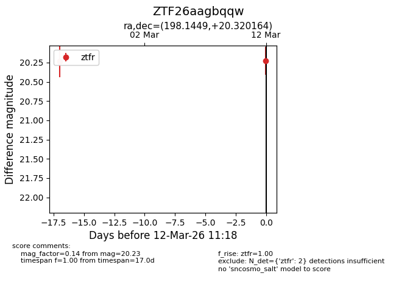
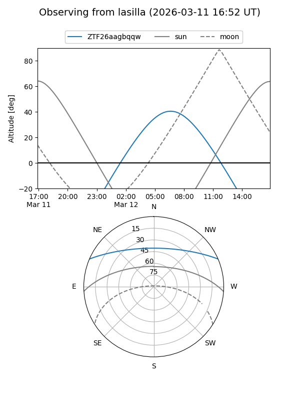
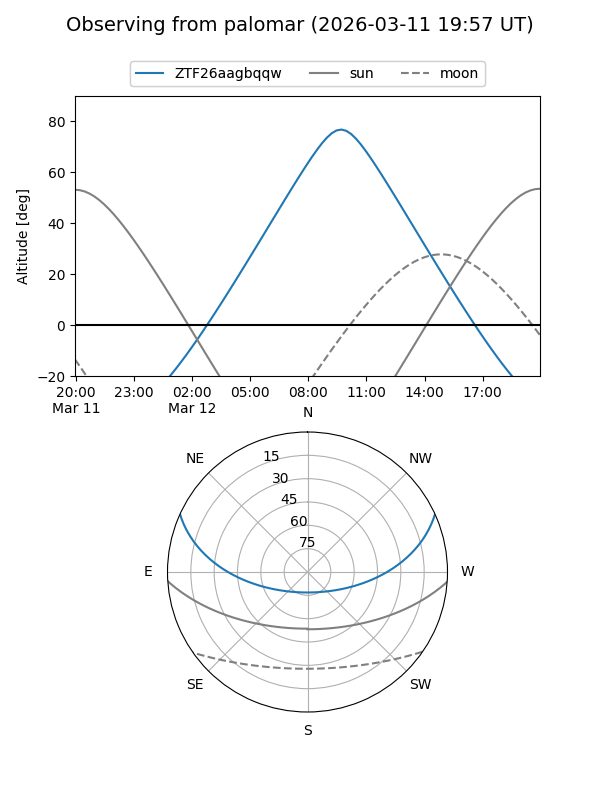

ZTF26aagbqqw
Target ZTF26aagbqqw at 2026-03-12 11:20
Aliases and brokers:
FINK: link
Lasair: link
ALeRCE: link
alt names
ZTF26aagbqqw (ztf,fink_ztf)
Coordinates:
equatorial (ra, dec) = 198.1449,+20.32016
equatorial (HMS+DMS) = 13:12:34.77,+20:19:12.59
galactic (l, b) = (339.4356,+81.65031)
Flags:
Photometry:
last ztfr=20.23
2 ztfr detections
Lightcurve

Visibility


Additional plots